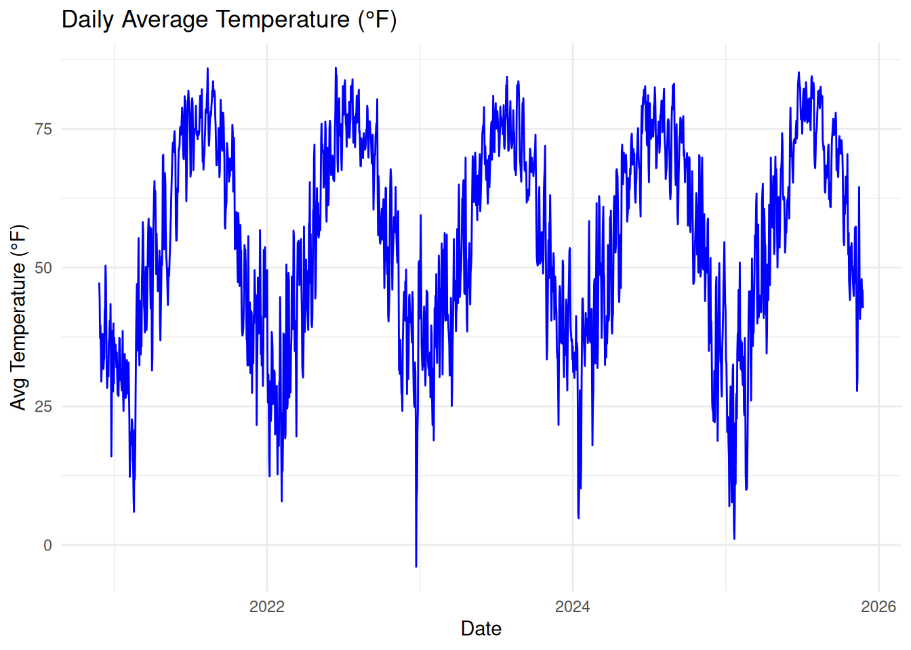
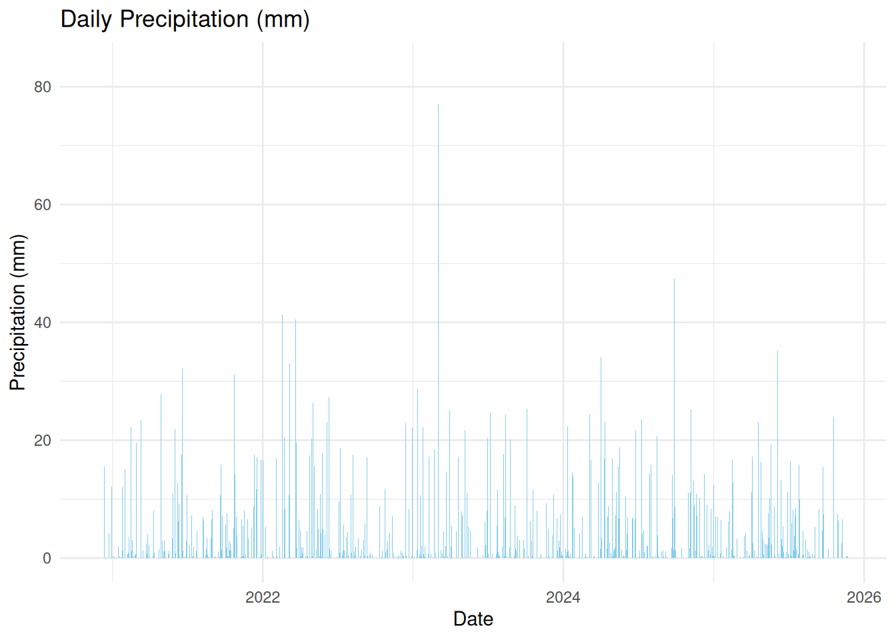

Indianapolis Weather Trends Analysis (2020 - 2025)
Author
Ephraim Retta
Indianapolis Weather Trends Analysis (2020 - 2025)
Abstract:
This analysis investigates weather trends in Indianapolis over a five-year period (2019–2023), focusing on temperature fluctuations, precipitation patterns, and seasonal variations. Weather data were acquired from the Open-Meteo API, encompassing daily maximum/minimum temperatures and total precipitation. The analysis highlighted distinct seasonal patterns, including consistent summer peaks in maximum temperatures and winter lows, and identified frequent precipitation events and occasional extreme weather conditions such as heat waves (>90°F) and significant rainfall events (>25 mm/day). An interactive dashboard was developed using R, Quarto, and Shiny, enabling dynamic exploration of weather data through user-defined date ranges, which supports deeper insights into Indianapolis’s climate trends.
Load required libraries
library(dplyr)
Attaching package: 'dplyr'
The following objects are masked from 'package:stats':
filter, lag
The following objects are masked from 'package:base':
intersect, setdiff, setequal, union
library(lubridate)
Attaching package: 'lubridate'
The following objects are masked from 'package:base':
date, intersect, setdiff, union
Indianapolis coordinates (latitude: 39.7684°N, longitude: 86.1581°W) are set to retrieve localized weather data. Data is fetched dynamically for the past five years up to the current date, ensuring the analysis is always up-to-date.
tibble [45,675 × 9] (S3: tbl_df/tbl/data.frame)
$ date : Date[1:45675], format: "2020-11-26" "2020-11-27" ...
$ time : chr [1:45675] NA NA NA NA ...
$ daily_temperature_2m_max : num [1:45675] 9.9 10.1 7.9 10.2 4.7 0.6 5.6 7.3 8.2 4.9 ...
$ daily_temperature_2m_min : num [1:45675] 7.1 3.7 -2 -1.8 -1.5 -3.4 -5 -3.6 -1.5 -1.8 ...
$ daily_precipitation_sum : num [1:45675] 0.1 0 0 0 5.1 0 0 0 0 0 ...
$ hourly_temperature_2m : num [1:45675] NA NA NA NA NA NA NA NA NA NA ...
$ hourly_relative_humidity_2m: int [1:45675] NA NA NA NA NA NA NA NA NA NA ...
$ hourly_precipitation : num [1:45675] NA NA NA NA NA NA NA NA NA NA ...
$ hourly_wind_speed_10m : num [1:45675] NA NA NA NA NA NA NA NA NA NA ...
2. DATA PREPARATION ———————
Extract relevant columns (daily maximum/minimum temperatures, precipitation). Convert Celsius temperatures to Fahrenheit. Generate new informative variables: average temperature, seasonal labels, extreme temperature flags, rain events, and temperature range. Limit dataset to precisely five years (1825 days).
Generate visual insights into temperature and precipitation patterns.
Time series plot for daily average temperature
p1 <-ggplot(indy_weather, aes(x = date, y = temp_avg_f)) +geom_line(color ="blue") +labs(title ="Daily Average Temperature (°F)",x ="Date", y ="Avg Temperature (°F)") +theme_minimal()
Bar plot for daily precipitation
p2 <-ggplot(indy_weather, aes(x = date, y = precipitation)) +geom_bar(stat ="identity", fill ="skyblue") +labs(title ="Daily Precipitation (mm)",x ="Date", y ="Precipitation (mm)") +theme_minimal()
Seasonal summary plot for average maximum temperature (grouped by year and season)
p3 <-ggplot(seasonal_summary, aes(x =interaction(year, season, sep =" - "), y = avg_max_temp)) +geom_col(fill ="coral") +labs(title ="Seasonal Average Maximum Temperature (°F)",x ="Year - Season", y ="Avg Max Temperature (°F)") +theme_minimal() +theme(axis.text.x =element_text(angle =45, hjust =1))
Display the plots
print(p1)

print(p2)

print(p3)
4. DASHBOARD —————————
Create an interactive Shiny-powered dashboard to explore weather data dynamically by adjusting date ranges.
Select Date Range
shiny::sliderInput(inputId ="daterange",label ="Select Date Range:",min =min(indy_weather$date),max =max(indy_weather$date),value =c(min(indy_weather$date), max(indy_weather$date)),timeFormat ="%Y-%m-%d")
Temperature Trends
renderPlot({# Inline filtering inside the reactive context filtered_data <- indy_weather %>%filter(date >= input$daterange[1] & date <= input$daterange[2])ggplot(filtered_data, aes(x = date, y = temp_avg_f)) +geom_line(color ="blue") +labs(title ="Daily Average Temperature (°F)",x ="Date", y ="Avg Temperature (°F)") +theme_minimal()})
Precipitation Trends
renderPlot({ filtered_data <- indy_weather %>%filter(date >= input$daterange[1] & date <= input$daterange[2])ggplot(filtered_data, aes(x = date, y = precipitation)) +geom_bar(stat ="identity", fill ="skyblue") +labs(title ="Daily Precipitation (mm)",x ="Date", y ="Precipitation (mm)") +theme_minimal()})
Seasonal Summary
renderPlot({ seasonal_summary <- indy_weather %>%filter(date >= input$daterange[1] & date <= input$daterange[2]) %>%group_by(year, season) %>%summarize(avg_max_temp =mean(temp_max_f, na.rm =TRUE), .groups ="drop")ggplot(seasonal_summary, aes(x =interaction(year, season, sep =" - "), y = avg_max_temp)) +geom_col(fill ="coral") +labs(title ="Seasonal Average Maximum Temperature (°F)",x ="Year - Season", y ="Avg Max Temperature (°F)") +theme_minimal() +theme(axis.text.x =element_text(angle =45, hjust =1))})